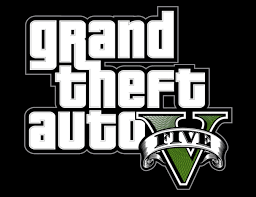
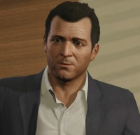
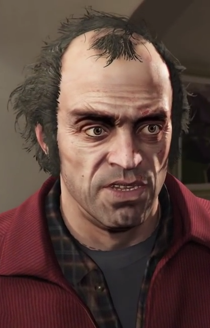
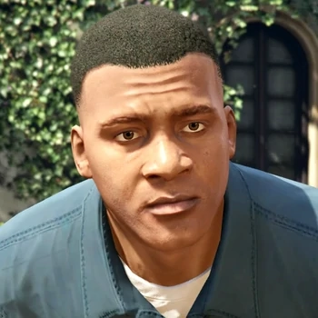

МОЯ ЛЮБИМАЯ ИГРА ЭТО

Познакомился я с этой игрой около 5 лет назад. Впервые я начал играть в нее со своим не родным братом,
я приносил playstation 3 к бабушке домой и мы там с ним оставались на пару дней а то на недели с утра до ночи проходя гта 5.
Также после прохождения игры мы также узнали о сетевом режиме, но в него играли не так уж много.
Главные герои:

Майк ДеСанта

Тревор Филлипс

Франклин Клинтон
Коротка о сюжете:
2004 год, Людендорф, Северный Янктон. Профессиональные грабители и лучшие друзья — Майкл Таунли, Тревор Филипс и Брэд Снайдер
совершают налёт на местный банк. Ограбление удаётся, но при отходе машина попадает в аварию, и героям приходится убегать пешком.
Брэда и Майкла подстреливает агент ФРБ (игровая пародия на ФБР) — Дейв Нортон. Тревору удаётся сбежать.
Но, как выясняется позже, смерть Майкла была инсценирована: он до ограбления вступил в сделку с коррумпированным
агентом ФРБ и начал с ним сотрудничество, и, ради спасения себя и своей семьи, завёл друзей в засаду. Дэйв,
пользуясь своей должностью, заметает следы Майкла, а Майкл покупает особняк в Лос-Сантосе на награбленные
за все эти года деньги. Действие игры переносится в 2013 год, в Лос-Сантос, штат Сан-Андреас. Майкл имеет
напряжённые отношения с семьёй: его жена Аманда постоянно тратит его деньги и изменяет ему, сын Джимми
помешан на видеоиграх и наркотиках, а дочь Трейси пытается попасть в телевидение, в частности в порно-индустрию.
Майкл ходит на сеансы к психотерапевту Исайе Фридлендеру, который, по его мнению, ему совсем не помогает.
На улице к Майклу обращаются двое афроамериканцев — Франклин Клинтон и его друг Ламар Дэвис — и спрашивают
адрес одного дома. Они угоняют у владельца этого дома два спорткара для работодателя Франклина
Симона Етаряна — хозяина автомобильного салона. В салоне Симон продаёт в кредит внедорожник сыну Майкла Джимми.
Но вскоре Симон поручает Франклину выкрасть машину из дома Майкла «за просрочку».
Франклин пробирается в дом и угоняет машину. Но на заднем сиденье оказывается Майкл,
который приставляет пистолет к голове Франклина и заставляет въехать в окно автосалона Етаряна.
Майкл избивает Симона за мошенничество, Франклин теряет работу. Франклин предлагает свои услуги Майклу.
Сына Майкла, Джимми, похищают некие бандиты вместе с яхтой Майкла, которую Джимми пытался им продать.
Майкл с Франклином спасают Джимми, но яхту упускают. Майкл, застукав Аманду в постели с её тренером по теннису,
гонится за ним вместе с Франклином до его дома и, привязав опоры дома к своему пикапу, обрушивает его на землю.
Но выясняется, что это был дом подруги главаря мексиканской мафии в Лос-Сантосе, Мартина Мадрасо.
Майкл должен за ремонт два с половиной миллиона долларов, и ему приходится вернуться к ограблениям.
Он находит своего старого друга, Лестера Креста. Франклин также помогает своему другу Ламару,
который связан с группировкой Chamberlain Gangster Families, которой противостоит банда Ballas.
Из тюрьмы возвращается один из почётных членов Families, Гарольд «Стретч» Джозеф, с которым Франклин имеет напряжённые отношения.
Также Ламар отдаёт Франклину на попечение своего пса Чопа. Майкл и Лестер подготавливают ограбление ювелирного магазина «Vangelico».
Вместе с Франклином и другими членами банды Майкл совершает налёт на магазин и выносит около пяти миллионов долларов.
Он расплачивается с Мартином, и вместе с Франклином решает залечь на дно. Но во время ограбления Майкл выдаёт себя своей фразой,
которую сказал в Людендорфе в 2004-м: «Каждый день ты забываешь тысячу мелочей. Пусть это будет одна из них».
И его по этой фразе узнаёт Тревор Филипс, который в это время, занимаясь сексом с наркоманкой-байкершей Эшли Батлер,
смотрел репортаж новостей об ограблении. Тревор живёт в Сэнди-Шорс, небольшом городке в Округе Блэйн.
Он имеет собственную наркокомпанию «Тревор Филипс Индастриз». Но на его пути встают байкеры «Пропащие»,
которые, после развала клуба в Либерти-Сити, перебрались в Округ Блэйн. Ситуация достигает своего апогея,
когда Тревор в порыве ярости убивает их президента, Джонни Клебица, решившего разобраться с Тревором из-за чувств к Эшли.
Также бизнесу Тревора мешает латиноамериканская группировка Varrios Los Aztecas, которая нападает на его наркофабрику.
Тревор отражает нападение и убивает главаря банды — Ортегу. С Тревором начинает работать Тао Чен,
сын Вэя Чена, главаря триады в Сан-Андреасе. Но его переманивают в свой бизнес конкуренты Тревора,
братья О’Нил. Тревор уничтожает их дом. Оставшиеся в живых О’Нилы и Вэй Чен жаждут мести
(последний же, отец Тао желает этого из-за того, что они потеряли покупателя из-за Филипса).
С помощью своего друга Уэйда Тревор находит Майкла в Лос-Сантосе. Друзья воссоединяются, но имеют напряжённые отношения
— Тревор считает Майкла предателем, инсценировавшим смерть и скрывшимся с деньгами. Майкл встречается с Дейвом Нортоном и
его коллегой Стивом Хейнсом и, по их поручению, с Тревором и Франклином спасает нужного ФРБ человека Фердинанда Керимова
из здания ЦУР (игровая пародия на ЦРУ). Затем, под руководством Тревора, герои крадут секретное оружие у частной
военной компании Merryweather, которое, однако, приходится вернуть. Майкл ссорится с семьёй, и Аманда с детьми уезжают.
Майкл, Тревор и Франклин по поручению ФРБ грабят инкассаторский фургон с деньгами, и Майкл знакомится с Дэвином Уэстоном,
богатым бизнесменом, который поручает героям украсть для него несколько редких машин.
Уэстон представляет Майкла Соломону Ричардсу, знаменитому кинорежиссёру, который предлагает де Санте быть продюсером его нового фильма.
Майклу звонит Мартин Мадрасо, и предлагает ему работу. Вместе с Тревором он сбивает реактивный самолёт и
крадёт из него ценные бумаги для Мадрасо. Но Мартин отказывается платить, и Тревор в злости нападает на Мартина
и похищает его жену Патрицию, с которой у него впоследствии возникают романтические отношения.
Майклу и Тревору приходится на время покинуть город, и они поселяются в трейлере Филипса в Сэнди-Шорс.
Тревор со своим другом Роном угоняет самолёт Merryweather с оружием, но его подбивают истребители.
Вместе с Майклом и Франклином Тревор убивает оставшихся в живых братьев О’Нил. Затем они совершают налёт на банк в Палето-Бэй,
но большая часть вырученного отдаётся ФРБ. Для расплаты с Мадрасо Майкл и Тревор грабят поезд Merryweather. Наконец,
вместе с Дейвом Нортоном и Стивом Хейнсом, они крадут нейротоксин из военной лаборатории. Тревор возвращает жену Мартину,
Майкл возвращается в город. Герои готовятся к главному ограблению в игре — ограблению Федерального хранилища.
Тревор внезапно задаётся вопросом, кто находится в могиле Майкла Таунли вместо него. Тревор решает добраться до Людендорфа,
чтобы все узнать. Майкл в погоне за ним также летит в Янктон. Тревор раскапывает могилу и находит в ней тело Брэда.
Внезапно появляются бандиты Вэя Чена. Тревор сбегает, Майкл же попадает в плен к китайцам. Франклин тем временем доставляет
все машины Уэстону, но Дэвин отказывается платить. С помощью Лестера Франклин находит Майкла и спасает его.
Майкл возвращается на киностудию. Дэвин Уэстон пытается сорвать съемки нового фильма Ричардса, но Майкл останавливает его.
С помощью доктора Фридлендера, Майкл воссоединяется с семьёй. Вместе с Франклином Майкл для совершает налёт на здание FIB
и крадёт ценные файлы для Нортона и Хейнса, попутно удаляя свои файлы из базы FIB. Нортон назначает встречу Майклу, которая
оказывается засадой агентов FIB, IAA и Merryweather. С помощью внезапно появившегося Тревора, Майкл и Дейв спасаются.
Тем временем Друг Франклина, Ламар, попадает в плен к Ballas на лесопилке в Палето-Бэй. С помощью Майкла
и Тревора Франклин спасает Ламара. Как выясняется, за этим стоял Стретч, предавший банду и переметнувшийся к Ballas.
Стив Хейнс и Дейв Нортон поручают Франклину убить Тревора, который является большой проблемой для них.
Майкл и Джимми направляются на премьеру фильма Соломона Ричардса «Катастрофа», продюсером которого является Майкл.
Но на особняк Майкла нападают агенты Merryweather, нанятые Дэвином Уэстоном. Майкл убивает всех агентов и спасает семью.
Герои совершают налёт на Федеральное хранилище, и выносят слитки золота суммой в 200 миллионов долларов. К Франклину же приходит Дэвин Уэстон и поручает убить Майкла.
ССЫЛКА НА СКАЧИВАНИЕ ИГРЫ БЕСПЛАТНО: *клик*